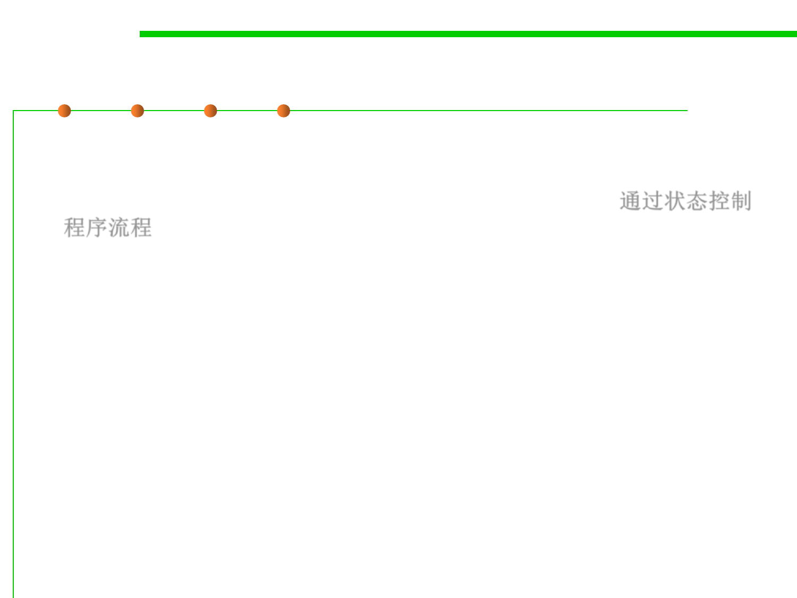

6.3 Maintainability-Oriented Construction Techniques
State-based programming
▪ State-based programming is a programming technology using finite
state machines (FSM有限状态机) to describe program behaviors, i.e.,
the use of “states” to control the flow of your program. 通过状态控制
程序流程
▪ For example, in the case of an elevator, it could be moving up, moving
down, stopping, closing the doors, and opening the doors.
▪ Each of these are considered a state, and what happens next is
determined by the elevator’s current state.
– If the elevator has just closed its doors, what are the possibilities that can
happen next? It can either move up, or move down. You wouldn’t expect the
elevator to stop after closing its doors.
– When an elevator stops, you expect the next action to be the door’s opening.